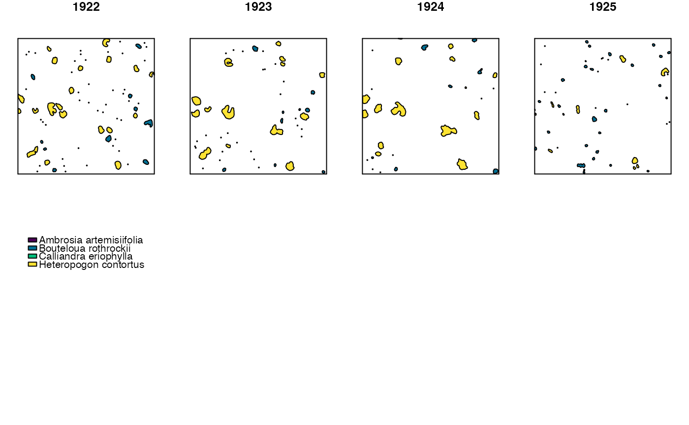

This function creates maps of a quadrat over time, color-coded by either species or by genet (trackID).
Usage
drawQuadMap(
dat,
type = "bySpecies",
addBuffer = FALSE,
species = "Species",
site = "Site",
quad = "Quad",
year = "Year",
geometry = "geometry",
trackID = "trackID",
...
)Arguments
- dat
An sf data.frame in which each row represents a unique polygon (either a genet or a ramet) in a unique site/quadrat/year combination. It is recommended that you only input data for one quadrat at a time. A data.frame returned by
trackSppcan be put into this function after being subset by quadrat. 'dat' must have columns that contain...a unique identification for each research site in character format with no NAs (the default column name is "Site")
species name in character format with no NAs (the default column name is "Species")
unique quadrat identifier in character format with no NAs (the default column name is "Quad")
year of data collection in integer format with no NAs (the default column name is "Year")
a unique identifier for each genet in character format with no NAs (the default column name is "trackID")
an s.f 'geometry' column that contains a polygon or multipolygon data type for each individual observation (the default column name is "geometry")
- type
A character argument indicating how the plots returned by
drawQuadMap()will be color coded. Iftype = "bySpecies", then observations are color-coded by species. Iftype = "bytrackID", then observations are color-coded by trackID. The default value is "bySpecies".- addBuffer
A logical argument indicating whether
drawQuadMap()will draw a small buffer around each polygon in the returned maps to make the observations more visible. This is particularly useful for observations that were originally mapped as points, which are hard to see when plotted in their original dimensions. The buffer distance is 1/20th of the quadrat width. The default value isFALSE.- species
An optional character string argument. Indicates the name of the column in 'dat' that contains species name data. It is unnecessary to include a value for this argument if the column name is "Species" (default value is 'Species').
- site
An optional character string argument. Indicates the name of the column in 'dat' that contains site name data. It is unnecessary to include a value for this argument if the column name is "Site" (default value is 'Site').
- quad
An optional character string argument. Indicates the name of the column in 'dat' that contains quadrat name data. It is unnecessary to include a value for this argument if the column name is "Quad" (default is 'Quad').
- year
An optional character string argument. Indicates the name of the column in 'dat' that contains data for year of sampling. It is unnecessary to include a value for this argument if the column name is "Year" (default is 'Year').
- geometry
An optional character string argument. Indicates the name of the column in 'dat' that contains sf geometry data. It is unnecessary to include a value for this argument if the column name is "geometry" (default is 'geometry').
- trackID
An optional character string argument. Indicates the name of the column in 'dat' that contains unique identifiers for each genet. It is unnecessary to include a value for this argument if the column name is "trackID" (default is 'trackID')
- ...
Other arguments passed on to methods. Not currently used.
Value
This function returns a multipanel plot where each panel shows a map of the quadrat in a unique year. Panels are arranged in chronological order, and plots are color-coded either by species or trackID (unique genet identifier).
#' @seealso trackSpp(), which can be used to assign trackIDs
to observations.
Examples
dat <- grasslandData[grasslandData$Site == c("AZ") &
grasslandData$Quad == "SG2" &
grasslandData$Year %in% c(1922:1925),]
names(dat)[1] <- "speciesName"
inv <- grasslandInventory[unique(dat$Quad)]
outDat <- trackSpp(dat = dat,
inv = inv,
dorm = 1,
buff = .05,
buffGenet = 0.005,
clonal = data.frame("Species" = unique(dat$speciesName),
"clonal" = c(TRUE,FALSE)),
species = "speciesName",
aggByGenet = TRUE
)
#> Site: AZ
#> -- Quadrat: SG2
#> ---- Species: Heteropogon contortus
#> ; Bouteloua rothrockii
#> ; Ambrosia artemisiifolia
#> ; Calliandra eriophylla
#> Note: Individuals in year 1927 have a value of 'NA' in the 'survives_tplus1' and 'size_tplus1' columns because 1927 is the last year of sampling in this quadrat.
#> Note: The output data.frame from this function is shorter than your input data.frame because demographic data has been aggregated by genet. Because of this, some columns that were present in your input data.frame may no longer be present. If you don't want the output to be aggregated by genet, include the argument 'aggByGenet == FALSE' in your call to trackSpp().
drawQuadMap(dat = outDat,
type = "bySpecies",
addBuffer = FALSE,
species = "speciesName"
)
